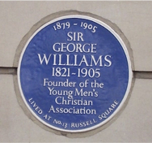

-1-MasterItem.svg)
Stories of Westminster United Church & its People / Page
48
As to the basic tenets of the scouting program: “a coherent ideology stressing unquestioning
obedience to properly structured authority; happy acceptance of one's social and
economic position
in life; and an unwavering, uncritical patriotism;” excellent precepts for training young soldiers for
War. But spirituality and the social imperatives that grow from it were totally
absent. Jesus wasn’t
in the picture.
The other programs, Tuxis and CGIT had quite a different birth process and were
more in keeping
with the values of Canadian Protestant churches at the time.
Back in the early 1800s a young man, George Williams
of Somerset, England, characterized himself as a “careless,
thoughtless, godless, swearing young fellow.” After beginning
work as an apprentice in a draper’s shop he experienced a
conversion and joined the Congregationalist Church.
He later worked in London, again as a draper.
From his own experience and by observation he became appalled
at the conditions under which young men were working and at
the activities they indulged in during their leisure hours. To take
action against this life style he gathered a group of his fellow
drapers together to create a place that would not tempt young
men into sin. He called it Young Men's Christian Association
(YMCA), which he founded on June 6, 1844.
The tenets which became the basis of his Association are known as the YMCA ’s four-fold program
of education: a focus on “physical, educational, social and spiritual growth.” William’s based this set
of values on Luke 2:52 — “And Jesus grew in wisdom and stature and in favour with God and men.”
While the original concept was Christian driven we know the YMCA today as being
open to people
of all races and religions. The basic program goals remain the same.
From this foundation then arose the development of the Canadian Standards
Efficiency Training
Program created by Taylor Statten (Boy’s Work Secretary- Canada YMCA). Stratton borrowed from

Scope of Sunday school activity